In many modern applications of reinforcement learning (RL), the natural reward for a task of interest is inherently sparse: a reward of 0 is given everywhere except when the task is completed, when a reward of +1 is given. Training a policy to maximize such a sparse reward requires solving a challenging credit assignment problem, leading to slow or ineffective RL improvement.
Training a policy to maximize such a sparse reward requires solving a challenging credit assignment problem, leading to slow or ineffective RL improvement. We propose a simple approach to transform a sparse outcome reward into a dense process reward. Our approach relies on training a discriminator to distinguish between previous successful and unsuccessful trajectories, and using this discriminator to incentivize the RL-learned policy to match the state-action visitations of successful trajectories, while avoiding those of unsuccessful trajectories. By incentivizing the policy to match the visitations over all states, not just those that correspond to task success, this reward provides dense feedback on whether progress is being made towards task completion, and, we show, provably achieves this without changing the optimal policy.
Focusing on finetuning of robotic control policies, we demonstrate that our approach leads to significantly faster RL finetuning performance on both simulated and real-world manipulation tasks, as compared to simply maximizing the sparse outcome reward.
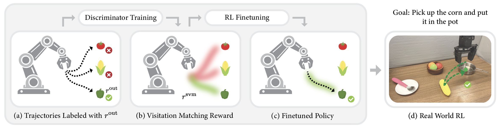
Our goal is to design a process reward that
(a) provides dense, step-level feedback that guides the learner towards successful states, and
(b) preserves the optimal policies under the outcome reward
To do so, we follow a simple principle: given past observations from the environment, reward the learner for visiting states that previously led to success, and penalize the learner for visiting states that previously led to failure.
Concretely, assume we have access to a set of trajectories labeled with sparse outcome rewards \(r^{\mathrm{out}}\), we train a discriminator \(f_\theta(s,a)\) to distinguish state-actions in successful trajectories from those in unsuccessful trajectories. We then define the success visitation matching reward as the logit of the discriminator: $$r^{\mathrm{svm}}(s,a)=\log \frac{f_\theta(s,a)}{1-f_\theta(s,a)}$$ This yields a dense process reward that incentivizes the learner to visit states likely to lead to success based on past observations. In our paper, we in addition show that this reward provably preserves the optimal policies under the outcome reward, thus satisfying the two desiderata outlined above.
Algorithm: Reinforcement Learning with SVM Process Reward
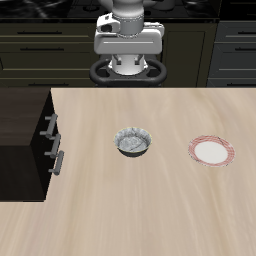
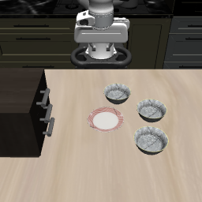
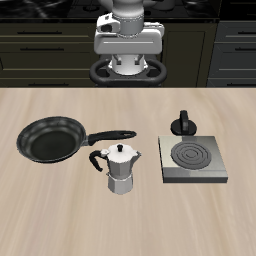
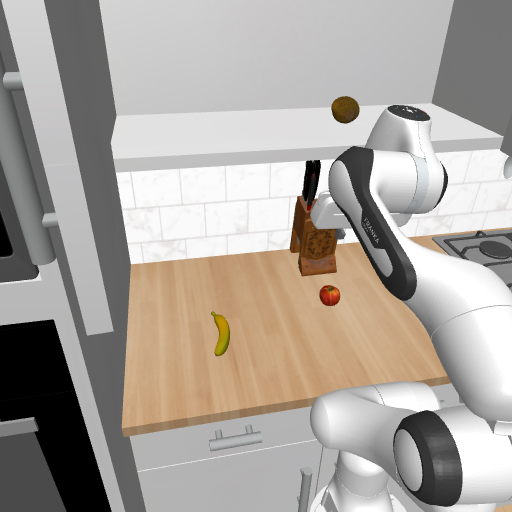
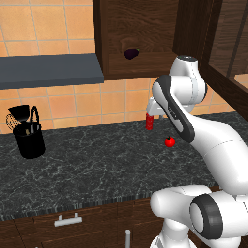
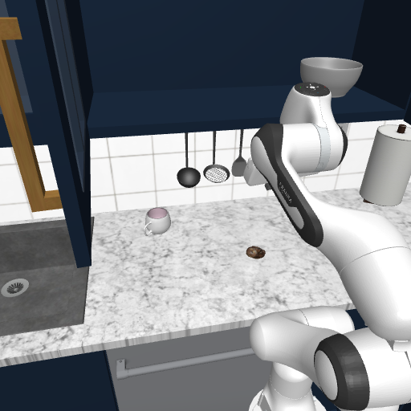
We consider the performance of RL with SVM rewards in the RL finetuning regime on the LIBERO benchmarks and RoboCasa pick and place tasks, using DSRL and Residual RL as the RL finetuning algorithms. Across all tasks, SVM rewards lead to significantly faster RL finetuning performance as compared to outcome rewards.
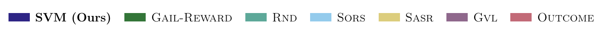
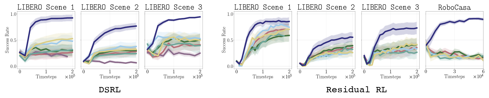
Next, we demonstrate that SVM scales to real-world robotic RL finetuning. We run DSRL on three real-world WidowX tasks: $\texttt{Pick and Place}$, $\texttt{Open Drawer}$, and $\texttt{Cover Knife with Cloth}$. Across all three tasks, SVM rewards lead to significantly faster RL finetuning compared to using outcome rewards alone. The video below provides a side-by-side comparison of DSRL with and without SVM rewards.
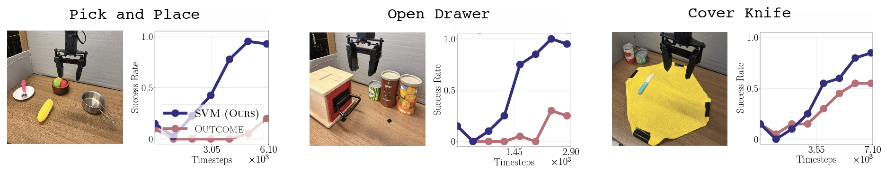
We further show that SVM can improve the efficiency of running RL finetuning on pretrained generalist policies. Here, we consider running DSRL of $\pi_0$ on selected LIBERO tasks. We see that the SVM process reward again yields substantial gains in sample efficiency, requiring roughly 2X fewer environment steps to reach 90% success, as compared to RL without reward shaping.
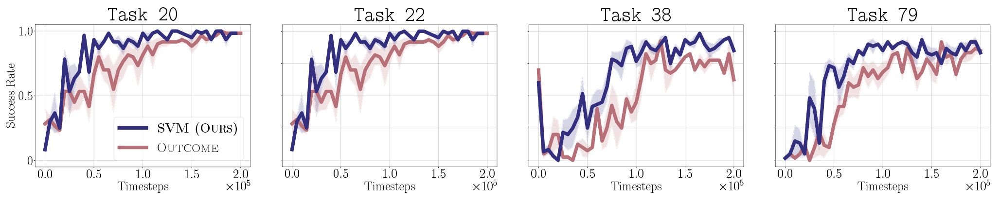
@article{park2021nerfies,
author = {Park, Keunhong and Sinha, Utkarsh and Barron, Jonathan T. and Bouaziz, Sofien and Goldman, Dan B and Seitz, Steven M. and Martin-Brualla, Ricardo},
title = {Nerfies: Deformable Neural Radiance Fields},
journal = {ICCV},
year = {2021},
}